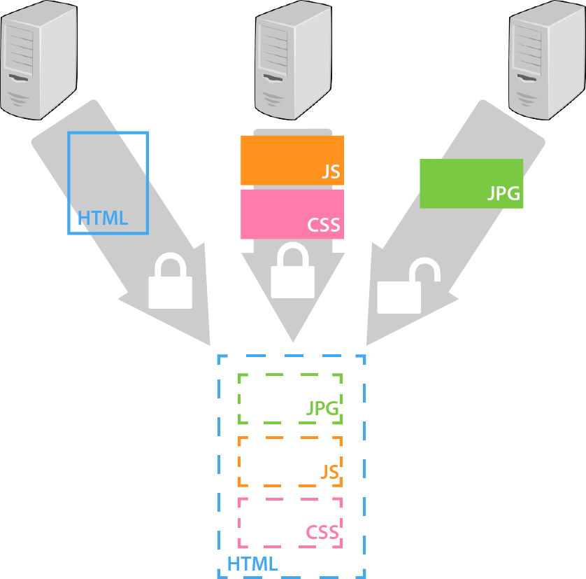
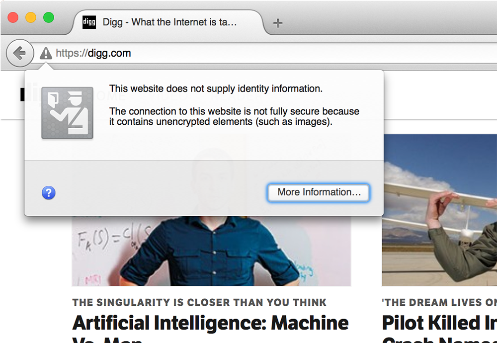

Web pages are made up of multiple objects. This first object fetched is
an HTML document, which tells your browser which additional objects it
should load and how to display them. Additional objects could include
scripts, style sheets, and images.
Browsers open multiple connections to fetch these embedded
objects. Loading the page using an HTTPS URL instructs the browser
to download the root HTML document over a secure connection, but
that HTML document might tell the browser to use unsecure
connections to fetch some embedded objects.

When this happens, modern browsers either display a warning icon
or omit the padlock icon altogether:


This section of the summary compares the number of objects
loaded over HTTP and HTTPS for each version of each site.